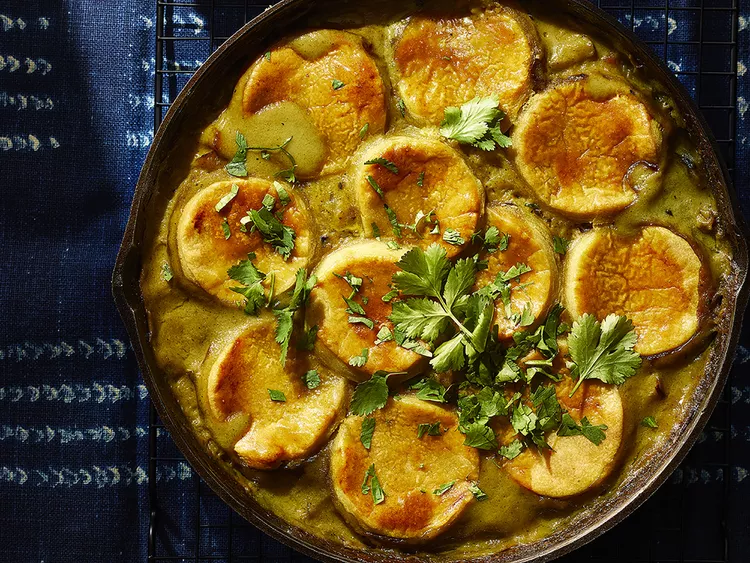

Creamy Curry-Spiced Chicken Pot Pie

Description:
This creamy, curry-spiced chicken pot pie is a fragrant, entirely made from scratch pie. It's baked in a cast iron skillet with golden pie crust cutouts over a chicken and vegetable filling lightly seasoned with curry powder.
Ingredients:
Dough
- 1 1/3 cups all-purpose flour
- 1/2 teaspoon curry powder
- 1/8 teaspoon salt
- 1/4 cup vegetable shortening
- 1/4 cup butter
- 5 tablespoons ice water
Filling
- 1/3 cup butter
- 1 pound skinless, boneless chicken breast, cubed
- 1 onion, chopped
- 2 stalks celery, chopped
- 2 carrots, chopped
- 2 teaspoons curry powder
- 1/3 cup all-purpose flour
- 2 cups low-sodium chicken broth
- 1/2 cup plain whole milk yogurt
- 1 tart apple, cored and chopped
- 1/4 cup chopped fresh cilantro, plus more for garnish
- 1/2 teaspoon salt
- 1/2 teaspoon ground black pepper
- 1/4 teaspoon dried thyme
- 1 large egg, beaten
Steps:
- For dough, add flour, curry powder, and salt to the bowl of a food processor and pulse until combined. Add shortening and cold butter. Pulse until combined and mixture resembles coarse crumbs. Add ice water, 1 tablespoon at a time, pulsing after each addition, until mixture comes together (See Note). Wrap in plastic and chill until ready to use, or up to 24 hours.
- For filling, melt butter in a 10-inch cast-iron skillet over medium-high heat. Add chicken, onion, celery, carrots, and curry powder; cook, stirring occasionally, until onion is softened, about 10 minutes. An instant-read thermometer inserted into thickest parts of chicken should register 165 degrees F (74 degrees C). Reduce heat to medium; add flour and cook, stirring frequently, about 3 minutes more. Slowly stir in broth and yogurt; simmer until thickened, about 5 minutes. Remove from heat. Stir in apple, cilantro, salt, pepper, and thyme.
- Preheat the oven to 400 degrees F (200 degrees C).
- To assemble pie, lightly flour a surface, unwrap dough, and roll out to about 1/8-inch thickness. Cut out shapes from dough with 2 1/2- to 3-inch cookie cutters. Arrange shapes on top of filling, overlapping as needed to cover. Brush egg over dough shapes.
- Bake in the preheated oven until pastry is golden brown and filling is bubbly, about 30 minutes. Cool at least 15 minutes before serving. Garnish with additional cilantro.
Home